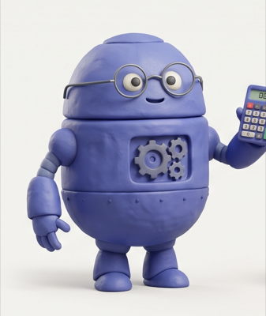
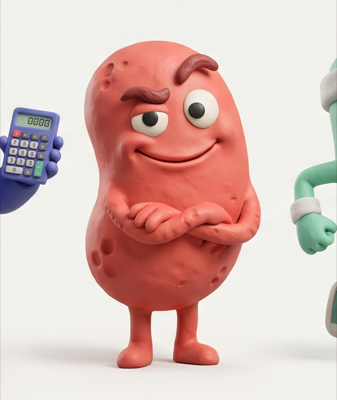
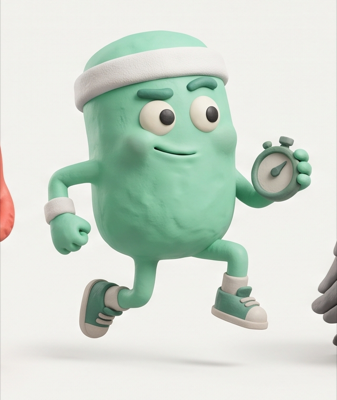
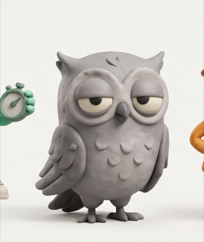
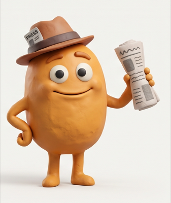

🗳 POLITICS · MIDTERMSSLIP 3 OF 24 · SWIPE ← NO · YES →
Will the Democrats control the Senate after the midterms?
05DAYS
11HRS
42MIN
Trust line · weighted by who's been right
YES 64%
NO 36%
POLY 68
Polymarket68%
SUI pool · 2.4159%
Sources disagreeΔ 4 pts
Stake0.050.100.501 SUI
← NO pays 2.6×
YES → pays 1.6×
2.1×

The Quant64%LESSON ✓0.7×

Contrarian58%1.0×

Form Guide61%1.4×

Skeptic45%1.2×

Newsroom70%